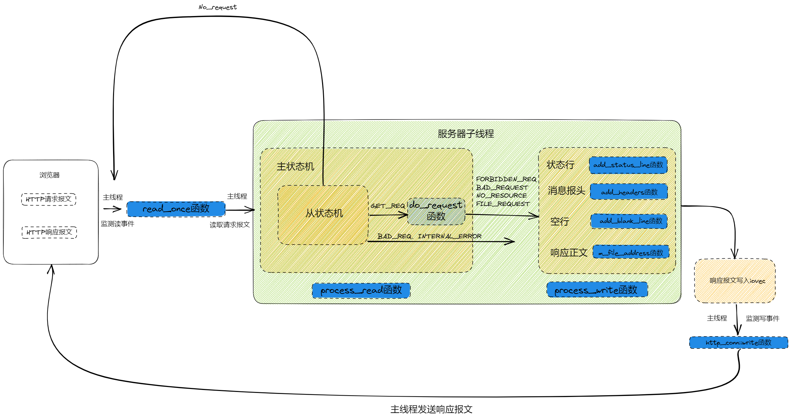

struct sockaddr_in
{
sa_family_t sin_family; //地址族（Address Family），也就是地址类型
uint16_t sin_port; //16位的端口号
struct in_addr sin_addr; //32位IP地址
char sin_zero[8]; //不使用，一般用0填充
};
定义在stdarg.h头文件当中。
#include<stdarg.h>
void f(const char* format, ...){
va_list args;
//format是最后一个确定的参数
va_start(args, format);
int numArg;
numArg = va_arg(args, int);
va_end(args);
//涉及动态分配内存，需要即时delete
}
C++11可变参数模板
定义了一个向量元素，通常，这个结构用作一个多元素的数组。
#include <sys/uio.h>
struct iovec {
ptr_t iov_base; /* Starting address */
size_t iov_len; /* Length in bytes */
};
成员iov_base指向一个缓冲区，这个缓冲区是存放readv所接收的数据或是writev将要发送的数据。
iov_len确定了接收的最大长度以及实际写入的长度。
用于将一个文件或其他对象映射到内存，提高文件的访问速度。
#include <sys/mman.h>
int munmap(void *addr, size_t len);
stat函数用于取得指定文件的文件属性，并将文件属性存储在结构体stat里，这里仅对其中用到的成员进行介绍。
#include <sys/types.h>
#include <sys/stat.h>
#include <unistd.h>
//获取文件属性，存储在statbuf中
int stat(const char *pathname,struct stat *statbuf);
struct stat
{
mode_t st_mode; /*文件类型和权限*/
off_t st_size; /*文件大小，字节数*/
}
writev函数用于在一次函数调用中写多个非连续缓冲区，有时也将这该函数称为聚集写。
#include <sys/uio.h>
ssize_t writev(int filedes, const struct iovec *iov, int iovcnt);
若成功则返回已写的字节数，若出错则返回-1。writev以顺序iov[0]，iov[1]至iov[iovcnt-1]从缓冲区中聚集输出数据。writev返回输出的字节总数，通常，它应等于所有缓冲区长度之和。
特别注意： 循环调用writev时，需要重新处理iovec中的指针和长度，该函数不会对这两个成员做任何处理。writev的返回值为已写的字节数，但这个返回值“实用性”并不高，因为参数传入的是iovec数组，计量单位是iovcnt，而不是字节数，我们仍然需要通过遍历iovec来计算新的基址，另外写入数据的“结束点”可能位于一个iovec的中间某个位置，因此需要调整临界iovec的io_base和io_len。
//报文请求的方法，本文主要就是POST，GET
enum METHOD
{
GET = 0,
POST,
HEAD,
PUT,
DELETE,
TRACE,
OPTIONS,
CONNECT,
PATH
};
HTTP请求报文由请求行（request line）、请求头部（header）、空行和请求数据四个部分组成。
其中，请求分为两种，GET和POST，具体的：
GET
GET /562f25980001b1b106080338.jpg HTTP/1.1
Host:img.mukewang.com
User-Agent:Mozilla/5.0 (windows NT 10.0;WOW64)
ApplewebKit/537.36 (KHTML,like Gecko)Chrome/51.0.2704.106 Safari/537.36
Accept:image/webp,image/*,*/*;q=0.8
Referer:http://www.imooc.com/
Accept-Encoding:gzip,deflate,sdch
Accept-Language:zh-CN,zh;q=0.8
空行
请求数据为空
POST
POST HTTP1.1
Host www.wrox.com
User-Agent:Mozilla/4.0 (compatible; MSIE 6.0; Windows NT 5.1; SV1; .NET CLR 2.0.50727; .NET CLR 3.0.04506.648; .NET CLR 3.5.21022)
Content-Type:application/x-www-form-urlencoded
Content-Length:40
Connection:Keep-Alive
空行
name=Professional%20Ajax&publisher=Wiley
请求行，用来说明请求类型,要访问的资源以及所使用的HTTP版本。 GET说明请求类型为GET，/562f25980001b1b106000338.jpg(URL)为要访问的资源，该行的最后一部分说明使用的是HTTP1.1版本。
请求头部，紧接着请求行（即第一行）之后的部分，用来说明服务器要使用的附加信息。
空行，请求头部后面的空行是必须的即使第四部分的请求数据为空，也必须有空行。
请求数据也叫主体，可以添加任意的其他数据。
HTTP/1.12000K
Date:Fri,22 May 2009 06:07:21 GMT
Content-Type:text/html;charset=UTF-8
空行
<html>
<head></head>
<body>
<！--body goes here->
</body>
</html>
- 状态行，由HTTP协议版本号， 状态码， 状态消息 三部分组成。 第一行为状态行，（HTTP/1.1）表明HTTP版本为1.1版本，状态码为200，状态消息为OK。
- 消息报头，用来说明客户端要使用的一些附加信息。 第二行和第三行为消息报头，Date:生成响应的日期和时间；Content-Type:指定了MIME类型的HTML(text/html),编码类型是UTF-8。
- 空行，消息报头后面的空行是必须的。
- 响应正文，服务器返回给客户端的文本信息。空行后面的html部分为响应正文。
表示HTTP请求的处理结果，在头文件中初始化了八种情形，在报文解析时只涉及到四种。
NO_REQUEST
GET_REQUEST
NO_RESOURCE
BAD_REQUEST
FORBIDDEN_REQUEST
FILE_REQUEST
INTERNAL_ERROR
在HTTP报文中，每一行的数据由\r\n作为结束字符，空行则是仅仅是字符\r\n。因此，可以通过查找\r\n将报文拆解成单独的行进行解析，项目中便是利用了这一点。
从状态机负责读取buffer中的数据，将每行数据末尾的\r\n置为\0\0，并更新从状态机在buffer中读取的位置m_checked_idx，以此来驱动主状态机解析。
GET和POST请求报文的区别之一是有无消息体部分，GET请求没有消息体，当解析完空行之后，便完成了报文的解析。